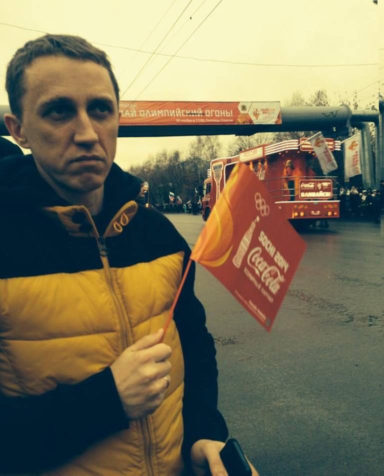

Сегодня стартовала Олимпиада. Одни говорят, что после Олимпиады будем жить хуже, другие говорят, что наоборот. Правы, уверен, и те и другие. Но никто не поспорит, что Олимпийские игры, в высшей степени значимое социальное событие. Социальное событие. Абсолютно неинтересное лично мне событие. Попробую разобраться.
Поводов к отсутствию интереса я могу выделить два.

Любой вид соревнования предполагает момент оценки этого действия социумом. Мотивом соревнующегося человека, какие бы слова он ни говорил, каким бы сильным духом спортсменом он не представал, будет желание получить положительную оценку от общества. Общество, в данном случае, — не обязательно аудитория Первого канала. Это может быть и 10Б класс, и даже любимая девушка (парень). В самом узком случае это будет желание повысить свою самооценку за счёт побеждённого (получить дополнительную мотивацию, если победить в этот раз не выйдет).
То есть соревнование априори предполагает наличие поощрения извне как основного мотива.
У социальной группы, к которой отношусь я, всё устроено иначе. Для нас первична мотивация изнутри. В случае со спортом — нам может нравиться спорт, если занятия спортом являются средством достижения поставленной самому себе цели (или просто приятным хобби). Как раз такие люди говорят, «главное не победа, а участие», и это не кредо неудачника. Для мотивации изнутри достаточно просто пробежать марафон или, к примеру, пробежать его в этом году за 4 часа, но ни в коем случае не прибежать к финишу первым. Достаточно даже пробежать часть марафона. Олимпийские игры являются гиперсоревнованием, и это первая причина отсутствия интереса.
Вторая причина — культивируемый мной, опять же внутри себя, космополитизм. Даже если допустить необходимость соревноваться в индивидуальном зачёте или командами, в соответствующих видах спорта, мне не очень понятна логика в состязании групп людей, объединённых по цвету паспорта. Если бы я был увлекающимся спортом любящим логику прагматиком, я бы голову сломал, не понимая как реагировать на успехи в фигурном катании выступающей за Россию украинки Татьяны Волосожар или бывшего американца сноубордиста Вика Уайлда. Или другого сноубордиста, выступающего за Швейцарию российского сноубордиста Юрия Подладчикова.
Олимпиада для меня — просто чужой бизнес, но её открытие — великолепное шоу, которое я сейчас и буду смотреть…